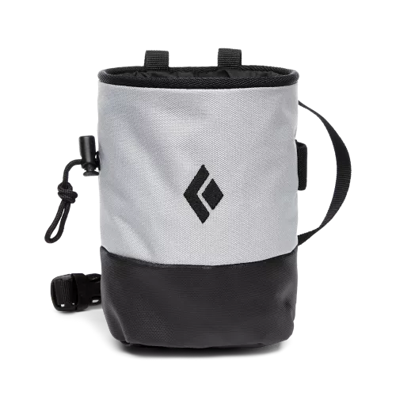

Required Equipment
There is only one peice of equipment that is really required
Climbing Shoes

Climbing shoes are important to have because there have a special type of rubber for the soles, heels and toe areas to help you stick to the wall.
Trainers are to clunkly to give you precise foot placement on the wall and dont have the required grip on angled or blank surfaces.
Top Brands
Not Required
This equipment is not required to have to start climbing but all can be helpful
Loose Chalk

Loose chalk is good to have if you get sweaty hands because it dries your hands up.
Even if you don't suffer from sweaty hands it's still good because it does provide extra grip.
Click on the picture and it'll take you to amazon where you can have a look at the loose chalk.
Chalk Bag
Chalk bags are good because it gives you a smaller bag to hold your chalk so you don't have a massive bag.
You can also get straps for chalk bags so they can go around your waist so you can have it on you when climbing.
Click on the picture and it'll take you to amazon where you can have a look at some chalk bags.
Climbing Brush

A climbing brush is useful because too much chalk build-up on rocks can make it less grip so you use the brush to scrub on it to get the build-up off.
Click on the picture and it'll take you to amazon where you can have a look at some climbing brushes.